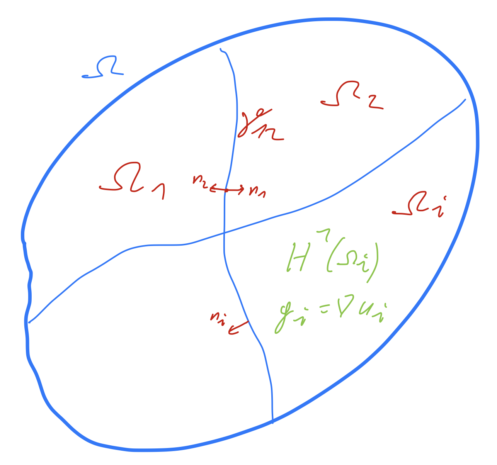
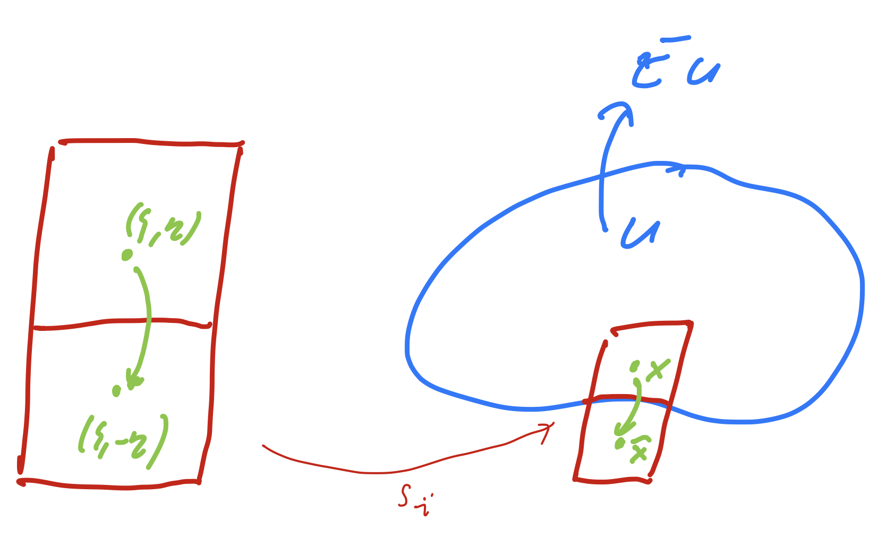

15. Trace theorems and their applications#
We consider boundary values of functions in Sobolev spaces. Clearly, this is not well defined for \(H^0 = L_2\). But, as we will see, in \(H^1\) and higher order Sobolev spaces, it makes sense to talk about \(u |_{\partial \Omega}\). The definition of traces is essential to formulate boundary conditions of PDEs in weak form.
We start in one dimension. Let \(u \in C^1 ([0,h])\) with some \(h > 0\). We multiply \(u\) with the cut-off function \(1-x/h\) (which does not change the value at \(x=0\), and apply the fundamental theorem of calculus:
Using the product rule and the Cauchy-Schwarz inequality for \(L_2\), we can bound
This estimate includes the scaling with the interval length \(h\). If we are not interested in the scaling, we apply Cauchy-Schwarz in \({\mathbb R}^2\), and combine the \(L_2\) norm and the \(H^1\) semi-norm \(\|u^\prime\|_{L_2}\) to the full \(H^1\) norm and obtain
Next, we extend the trace operator to the whole Sobolev space \(H^1\):
Trace theorem in 1D: There is a well defined and continuous trace operator
\[ \operatorname{tr} : H^1((0,h)) \rightarrow {\mathbb R} \]whose restriction to \(C^1([0,h])\) coincides with
\[ u \rightarrow u(0). \]
Proof: Use that \(C^1([0,h])\) is dense in \(H^1(0,h)\). Take a sequence \(u_j\) in \(C^1([0,h])\) converging to \(u\) in \(H^1\)-norm. This sequence is Cauchy. By continuity of the boundary trace, the sequence of boundary values \(u_j(0)\) is Cauchy as well, and thus converges to a limit \(u_0\). The limit is independent of the choice of the sequence \(u_j\). This allows to define \(\operatorname{tr} u := u_0\). \(\Box\)
Now, we extend this 1D result to domains in more dimensions. Let \(\Omega\) be bounded, \(\partial \Omega\) be Lipschitz, and consists of \(M\) pieces \(\Gamma_i\) of smoothness \(C^1\).
We can construct the following covering of a neighbourhood of \(\partial \Omega\) in \(\Omega\): Let \(Q = (0,1)^2\). For \(1 \leq i \leq M\), let \(s_i \in C^1 (Q, \Omega)\) be invertible and such that \(\left\| s_i^\prime \right\|_{L_\infty} \leq c\), \(\| (s_i^\prime)^{-1} \|_{L_\infty} \leq c\), and \(\operatorname{det} s_i^\prime > 0\). The domains \(S_i := s_i(Q)\) are such that \(s_i( (0,1) \times \{ 0 \} ) = \Gamma_i\), and the parameterizations match on \(s_i( \{ 0,1 \} \times (0,1) )\).
Trace Theorem: There exists a well defined and continuous operator
\[ \operatorname{tr} : H^1 (\Omega) \rightarrow L_2(\partial \Omega) \]which coincides with \(u|_{\partial \Omega}\) for \(u \in C^1(\overline{\Omega})\).
Proof: Again, we prove that
is a bounded operator w.r.t. the norms \(\|.\|_{H^1(\Omega)}\) and \(\|.\|_{L_2(\partial \Omega)}\), and conclude by density.
We start proving the trace estimate on the square \(Q := (0,1)^2\), and taking boundary values on the bottom side \(\Gamma_b := (0,1) \times \{0\}\). For every \(\xi \in (0,1)\) we apply the one-dimensional trace inequality in \(y\)-direction:
The result follows from integrating over \(\xi\) and Fubini:
{kind=link}
We use the partitioning of \(\partial \Omega\) into non-overlapping parts \(\Gamma_i\), \(1 \leq i \leq M\). For each part \(\Gamma_i\) we define an injective transformation \(s_i : \overline Q \rightarrow \overline \Omega\) such that the bottom edge of \(Q\) is mapped onto \(\Gamma_i\). We define \(S_i = s_i(Q)\). We assume that \(s_i^\prime\) and \((s_i^\prime)^{-1}\) are bounded functions a.e.
This allows to pull-back functions \(u \in H^1(S_i)\) locally to the square domain \(Q\):
We transfer the \(L_2(\Gamma_i)\)-norms to the bottom edges:
To transform the \(H^1\)-norm, we use the chain-rule
Since \(s_i^\prime\) and \((s_i^\prime)^{-1}\) are uniformly bounded, we get
and, furthermore
Combining the estimates we have proven
\(\Box\)
Considering the trace operator from \(H^1(\Omega)\) to \(L_2(\partial \Omega)\) is not sharp with respect to the norms. We will improve the embedding later.
By means of the trace operator we define the sub-space
It is a true sub-space, since \(u = 1\) does belong to \(H^1\), but not to \(H_0^1\). It is a closed sub-space, since it is the kernel of a continuous operator.
By means of the trace inequality, one verifies that the linear-form
is bounded on \(H^1\).
Using the Cauchy-Schwarz inequality on \(L_2(\Gamma_N)\), and continuity of the trace operator we obtain:
Thus, the dual-norm of the linear-form is bounded by
15.1. Integration by parts#
The definition of the trace allows us to perform integration by parts in \(H^1\):
The definition of the weak derivative (e.g. the weak gradient) looks similar. However, it allows only test functions \(\varphi\) with compact support in \(\Omega\), i.e., having zero boundary values. Only by choosing a normed space, for which the trace operator is well defined, we can state and prove integration by parts. Again, the short proof is based on the density of \(C^1(\overline \Omega)\) in \(H^1\).
15.2. Sobolev spaces over sub-domains#
Let \(\Omega\) consist of \(M\) Lipschitz-continuous sub-domains \(\Omega_i\) such that
\(\overline \Omega = \cup_{i=1}^M \overline \Omega_i\)
\(\Omega_i \cap \Omega_j = \emptyset \quad \mbox{ if } i \neq j\)
The interfaces are \(\gamma_{ij} = \overline \Omega_i \cap \overline \Omega_j\). The outer normal vector of \(\Omega_i\) is \(n_i\).
{kind=link}
Theorem: Let \(u \in L_2(\Omega)\) such that
\(u_i := u|_{\Omega_i}\) is in \(H^1(\Omega_i)\), and \(g_i = \nabla u_i\) is its weak gradient
the traces on common interfaces coincide:
\[ \operatorname{tr}_{\gamma_{ij}} u_i = \operatorname{tr}_{\gamma_{ij}} u_j \]Then \(u\) belongs to \(H^1(\Omega)\). Its weak gradient \(g = \nabla u\) fulfills \(g|_{\Omega_i} = g_i\).
Proof: We have to verify that \(g \in L_2(\Omega)^d\), defined by \(g |_{\Omega_i} = g_i\), is the weak gradient of \(u\), i.e.,
We split the integral over sub-domains, use the definition of the local gradient, perform integration by parts on the sub-domains, and combine boundary terms from \(\Omega_i\) and \(\Omega_j\) to the common interface \(\gamma_{ij}\):
We have used that \(\varphi = 0\) on \(\partial \Omega\), and \(n_i = -n_j\) on \(\gamma_{ij}\). \(\Box\)
Applications of this theorem are (conforming nodal) finite element spaces. The partitioning \(\Omega_i\) is the mesh. On each sub-domain, i.e., on each element \(T\), the functions are polynomials and thus in \(H^1(T)\). The finite element functions are constructed to be continuous, i.e., the traces match on the interfaces. Thus, the finite element space is a sub-space of \(H^1\).
15.3. Extension operators#
Some estimates are elementary to verify on simple domains such as squares \(Q\). One technique to transfer these results to general domains is to extend a function \(u \in H^1(\Omega)\) onto a larger square \(Q\), apply the result for the square, and restrict the result onto the general domain \(\Omega\). This is now the motivation to study extension operators.
{kind=link}
We construct a non-overlapping covering \(\{ S_i \}\) of a neighbourhood of \(\partial \Omega\) on both sides. Let \(\partial \Omega = \cup \Gamma_i\) consist of smooth parts. Let \(s : (0,1) \times (-1,1) \rightarrow S_i : (\xi, \eta) \rightarrow x\) be an invertible function such that
Assume that \(\| \frac{ds_i}{dx} \|_{L_\infty}\) and \(\| \left( \frac{ds_i}{dx} \right)^{-1} \|_{L_\infty}\) are bounded.
This defines an invertible mapping \(x \rightarrow \hat x (x)\) from the inside to the outside by
The mapping preserve the boundary \(\Gamma_i\). The transformations \(s_i\) should be such that \(x \rightarrow \hat x\) is consistent at the interfaces between \(S_i\) and \(S_j\).
With the flipping operator \(f : (\xi, \eta) \rightarrow (\xi, -\eta)\), the mapping is the composite \(\hat x(x) = s_i (f(s_i^{-1}))\). From that, we obtain the bound
Define the domain \(\widetilde \Omega = \Omega \cup S_1 \cup \ldots \cup S_M\).
We define the extension operator by
Theorem: The extension operator \(E : H^1(\Omega) \rightarrow H^1(\widetilde \Omega)\) is well defined and bounded with respect to the norms
\[ \| E u \|_{L_2(\widetilde \Omega)} \leq c \, \| u \|_{L_2(\Omega)} \]and
\[ \| \nabla E u \|_{L_2(\widetilde \Omega)} \leq c \, \| \nabla u \|_{L_2(\Omega)} \]
Proof: Let \(u \in C^1(\overline \Omega)\). First, we prove the estimates for the individual pieces \(S_i\):
For the derivatives we use
Since \(\frac{d x}{d \hat x}\) and \((\frac{d x}{d \hat x})^{-1} = \frac{d \hat x}{dx}\) are bounded, one obtains
and
These estimates prove that \(E\) is a bounded operator into \(H^1\) on the sub-domains \(S_i \setminus \Omega\). The construction was such that for \(u \in C^1(\overline \Omega)\), the extension \(E u\) is continuous across \(\partial \Omega\), and also across the individual \(S_i\). By Theorem~\ref{theo_subdomainh1}, \(E u \) belongs to \(H^1 (\widetilde \Omega)\), and
By density, we get the result for \(H^1(\Omega)\). Let \(u_j \in C^1(\overline \Omega) \rightarrow u\), than \(u_j\) is Cauchy, \(E u_j\) is Cauchy in \(H^1(\widetilde \Omega)\), and thus converges to \(u \in H^1(\widetilde \Omega)\).
The extension of functions from \(H_0^1(\Omega)\) onto larger domains is trivial: Extension by \(0\) is a bounded operator. One can extend functions from \(H^1(\Omega)\) into \(H_0^1(\widetilde \Omega)\), and further, to an arbitrary domain by extension by \(0\).
For \(\hat x = s_i(\xi, -\eta)\), \(\xi, \eta \in (0,1)^2\), define the extension $\( E_0 u (\hat x) = (1-\eta) \, u(x) \)\( This extension vanishes at \)\partial \widetilde \Omega$
Theorem: The extension \(E_0\) is an extension from \(H^1(\Omega)\) to \(H_0^1(\widetilde \Omega)\). It is bounded w.r.t.
\[ \| E_0 u \|_{H^1(\widetilde \Omega)} \leq c \| u \|_{H^1(\Omega)} \]
Proof: Exercises
In this case, it is not possible to bound the gradient term only by gradients. To see this, take the constant function on \(\Omega\). The gradient vanishes, but the extension is not constant.
15.4. The trace space \(H^{1/2}\)#
The trace operator is continuous from \(H^1(\Omega)\) into \(L_2(\partial \Omega)\). But, not every \(g \in L_2(\partial \Omega)\) is a trace of some \(u \in H^1(\Omega)\). We will motivate why the trace space is the fractional order Sobolev space \(H^{1/2}(\partial \Omega)\).
We introduce a space with a stronger norm, such that the trace operator is still continuous, and also surjective. Let \(V = H^1(\Omega)\), and define the trace space as the range of the trace operator
with the norm
This is indeed a norm on \(W\). The trace operator is continuous from \(V \rightarrow W\) with norm \(1\).
Lemma: The space \((W, \|.\|_W)\) is a Banach space. For all \(g \in W\) there exists an \(u \in V\) such that \(\operatorname{tr} \, u = g\) and \(\| u \|_V = \| g \|_W\)
Proof: The kernel space \(V_0 := \{ v : \operatorname{tr} \, v = 0 \}\) is a closed sub-space of \(V\). If \(\operatorname{tr} \, u = \operatorname{tr} \, v\), then \(z := u - v \in V_0\). We can rewrite
Now, let \(g_n = \operatorname{tr} \, u_n \in W\) be a Cauchy sequence. This does not imply that \(u_n\) is Cauchy, but \(P_{V_0^\bot} u_n\) is Cauchy in \(V\):
The \(P_{V_0^\bot} u_n\) converge to some \(u \in V_0^\bot\), and \(g_n\) converge to \(g := \operatorname{tr} \, u\). \(\Box\)
The minimizer fulfills
This means that \(u\) is the solution of the weak form of the Dirichlet problem
To give an explicit characterization of the norm \(\|.\|_W\), we introduce Hilbert space interpolation:
15.5. Interpolation spaces#
To explain the idea we expand \(u \in L_2(0,1)\) in a Fourier-sine-series
with Fourier coefficients
The \(L_2\)-norm is (by Parseval’s theorem)
Formally, its derivative is
and the \(H^1\) semi-norm (which is here actually equivalent to the norm) is
The function \(u\) lies in \(H_0^1 \subset L_2\) if and only if this is a finite sum, i.e. \((k u_k)_{k \in {\mathbb N}}\) lies in \(l_2\).
This motivates to define the family of interpolation spaces
of functions
The norms are
For the limiting values \(s=0\) and \(s=1\), the interpolation space are \(L_2\) and \(H_0^1\), respectively.
Since all terms have zero boundary values, the Fourier-sine series spans \(H_0^1\). If we use the Fourier-cosine series instead, we obtain the whole space \(H^1\).
15.5.1. General definition:#
Let \(V_1 \subset V_0\) be two Hilbert spaces, such that \(V_1\) is dense in \(V_0\), and the embedding operator \(id : V_1 \rightarrow V_0\) is compact. We can pose the eigen-value problem: Find \(z \in V_1\), \(\lambda \in {\mathbb R}\) such that
There exists a sequence of eigen-pairs \((z_k, \lambda_k)\) such that \(\lambda_k \rightarrow \infty\). The \(z_k\) form an orthonormal basis in \(V_0\), and an orthogonal basis in \(V_1\).
The converse is also true. If \(z_k\) is a basis for \(V_0\), and the eigenvalues \(\lambda_k \rightarrow \infty\), then the embedding \(V_1 \subset V_0\) is compact.
Given \(u \in V_0\), it can be expanded in the orthonormal eigen-vector basis:
The \(\|.\|_{V_0}\) - norm of \(u\) is
If \(u \in V_1\), then
The sub-space space \(V_1\) consists of all \(u = \sum u_k z_k\) such that \(\sum_k \lambda_k u_k^2\) is finite. This suggests the definition of the interpolation norm
and the interpolation space \(V_s = [V_0, V_1]_s\) as
We have been fast with using infinite sums. To make everything precise, one first works with finite dimensional sub-spaces \(\{ u : \exists n \in {\mathbb N} \mbox{ and } u = \sum_{k=1}^n u_k z_k \}\), and takes the closure.
In our case, we apply Hilbert space interpolation to \(H^1(0,1) \subset L_2(0,1)\). The eigen-value problem is to find \(z_k \in H^1\) and \(\lambda_k \in {\mathbb R}\) such that
By definition of the weak derivative, there holds \((z_k^\prime)^\prime = (1-\lambda_k) z_k\), i.e., \(z^k \in H^2\). Since \(H^2 \subset C^0\), there holds also \(z \in C^2\), and a weak solution is also a solution of the strong form
All solutions, normalized to \(\| z_k \|_{L_2} = 1\), are
and, for \(k \in {\mathbb N}\),
Indeed, expanding \(u \in L_2\) in the \(\cos\)-basis \(u = u_0 + \sum_{k=1}^\infty u_k \sqrt2 \cos (k \pi x)\), one has
and
Differentiation adds a factor \(k \pi\). Hilbert space interpolation allows to define the fractional order Sobolev norm (\(s \in (0,1)\))
15.5.2. The trace space on one edge of the square#
We consider the trace \(\operatorname{tr}|_E\) of \(H^1((0,1)^2)\) on the bottom edge \(E = (0,1) \times \{ 0 \}\). For \(g \in W_E := \operatorname{tr}_E H^1((0,1)^2)\), the norm \(\| g \|_W\) is defined by
where \(u_g\) solves the Dirichlet problem \(u_g|_E = g\), and \((u_g,v)_{H^1} = 0 \; \forall \, v \in H^1\) such that \(\operatorname{tr}_E v = 0\).
Since \(W \subset L_2(E)\), we can expand \(g\) in the \(L_2\)-orthonormal cosine basis \(z_k\)
The Dirichlet problems for the \(z_k\),
have the explicit solution
and
Ignoring constant factors, there holds
and
Furthermore, the \(u_k\) are orthogonal in \((.,.)_{H^1}\). Thus, \(u_g = \sum_k g_k u_k\) has the norm
This norm is equivalent to \(H^{1/2}(E)\).
We have proven that the trace space onto one edge is the interpolation space \(H^{1/2}(E)\). This is also true for general domains (Lipschitz, with piecewise smooth boundary).